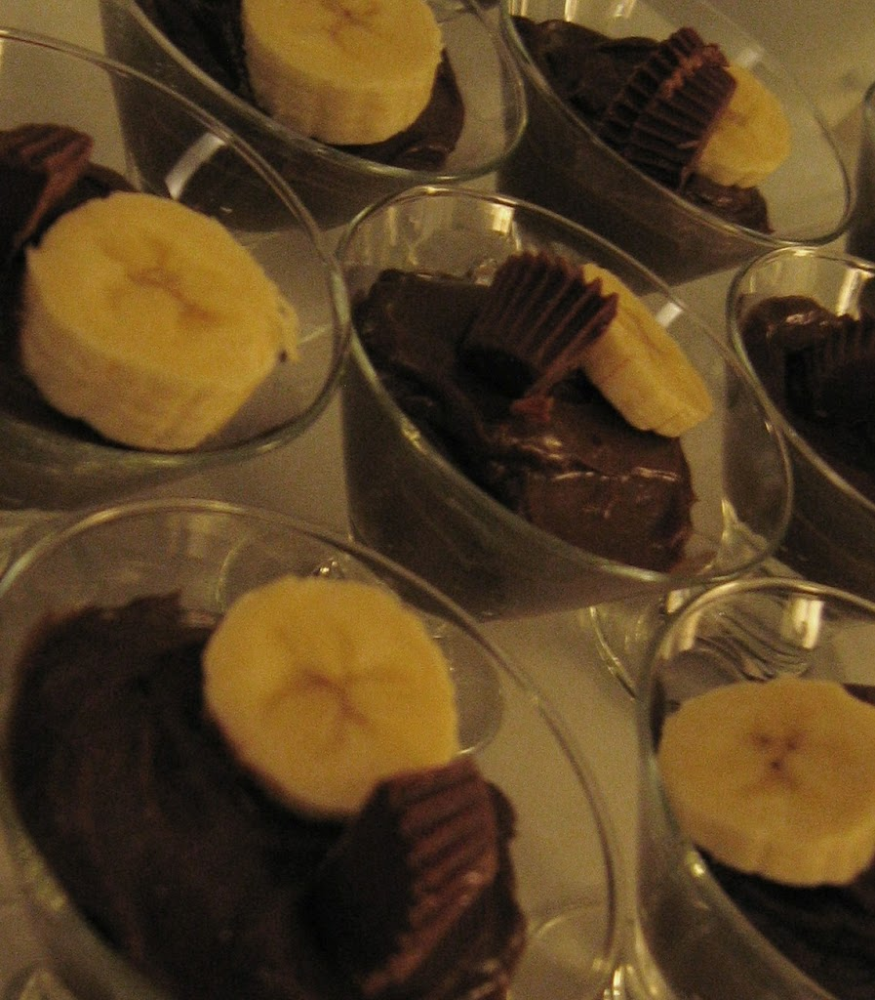

Weird and Wonderful Avocado Chocolate Peanut Butter Pudding

ingredients
- ripe avocados, peeled and sliced
- ¼ cup + generous pinch of cocoa powder (more to taste)
- ¼ cup peanut butter
- pinch of cinnamon
- 1 tsp vanilla extract
- ¾ cup agave nectar (I used the amber variety)
- 1 tsp fresh lemon juice
instructions
- Combine all ingredients in a food processor until velvety smooth.
- Refrigerate for 12-24 hours. Serve topped with banana slices and halved peanut butter cups to really wow ‘em!
HAVE FUN!!
Back